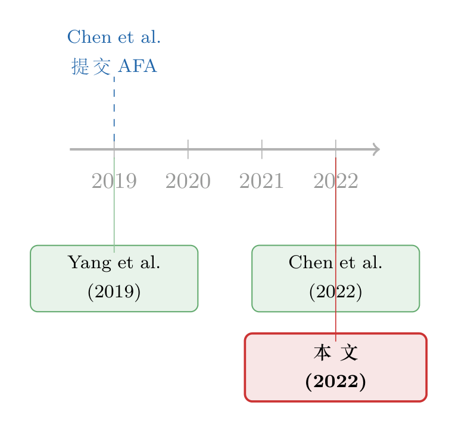

谁先到的？——一桩 JFE 学术优先权争议的「结案陈词」
本文读的是 Whited (2022, Journal of Financial Economics) 的一篇《编辑手记 (Editor's Note)》：有人投诉一篇已发表的 JFE 论文 Chen et al. (2022) 抄袭了一篇更早的中文论文 Yang et al. (2019)。期刊编委会调查后认定——Chen et al. 的预印本（2019 年 3 月 15 日提交 AFA 年会）比 Yang et al. 的上网日期（2019 年 4 月 12 日）还要早，因此作者根本不可能看到过那篇中文论文；两文虽有重叠，但数据、方法与结果各不相同。指控不成立。
1 一个比论文本身更有意思的问题
我们读过太多 JFE 上动辄四五十页、塞满了固定效应与稳健性检验的实证论文。但这一次，我想请你读的，是一篇只有一页的东西——一篇《编辑手记》。它没有假设，没有回归表，没有 t 值。它只回答一个问题，而这个问题，恰恰是任何一个做研究的人午夜梦回时都会冒一身冷汗的问题：
如果有一天，有人指着你发表的论文说「这是抄的」，会发生什么？
先把场景摆清楚。2022 年 5 月 9 日，JFE 的编辑收到一封投诉信。矛头指向已经发表在 JFE 上的一篇论文 Chen et al. (2022)——题为 On the fast track: information acquisition costs and information production，研究的是中国高铁 (high-speed rail) 的开通如何改变了证券分析师获取信息的成本与产出。投诉信里有两条指控，环环相扣，分量极重：
第一条，时间上的指控：有另一篇论文 Yang et al. (2019)，它的发表日期，早于 Chen et al. (2022) 作为预印本存在的日期。换句话说——你比人家晚。
第二条，内容上的指控：Chen et al. (2022) 与 Yang et al. (2019) 存在「实质性重叠 (substantial overlap)」。换句话说——你跟人家像。
晚，又像。这两个字凑在一起，在学术圈里几乎就是「抄袭」的同义词。更棘手的是，Yang et al. (2019) 是一篇中文论文，发表在《金融研究》（J. Financ. Res.）上——一本绝大多数 JFE 读者读不懂、也从未听说过的期刊。一个天然的信息屏障，横在两篇论文之间。
于是，一个自然的问题是：面对这样一桩跨语言、跨期刊的优先权争议，一家顶级期刊到底是怎么查的？
2 这不是一篇实证论文，但它有自己的「识别策略」
我之所以愿意为这一页纸单写一篇评述，是因为它其实暗含了一套相当严谨的「识别 (identification)」逻辑——只不过，它识别的不是某个经济效应的因果，而是一桩指控的真伪。
要驳倒「抄袭」这个指控，编委会其实不需要证明两篇论文毫无关系。它只需要证明一件事：在 Chen et al. 的作者写出初稿的那一刻，他们在物理上不可能接触到 Yang et al. 的内容。 这就是这场调查真正的「排除性约束 (exclusion restriction)」——抄袭这条因果链要成立，前提是「先有 Yang，后有 Chen，且 Chen 能看到 Yang」。只要把这条时间链打断，整个指控就坍塌了。
所以，调查兵分两路。
第一路，钉死 Yang et al. (2019) 究竟是「哪一天」出现在世界上的。 这一步看似简单，实则最容易被人含糊带过——一篇论文的「日期」可以指投稿日、接收日、见刊日、上网日，差出大半年很正常。编委会做了一件笨功夫但极其关键的事：他们用中英文双语在互联网上做了彻底的检索，去找这篇中文论文最早出现在网上的时间。结论是——Yang et al. (2019) 第一次出现在互联网上的日期，就是它的正式发表日期 2019 年 4 月 12 日；在这之前，无论中文还是英文，找不到任何预印本。
注意这个细节的分量：编委会没有想当然地用「2019」这个年份去比，而是把它精确到了 4 月 12 日，并且特意排除了「Yang 在正式发表前是否有更早的预印本流传」这种可能性。识别一桩争议，和识别一个因果效应一样，魔鬼都在日期的小数点后面。
第二路，钉死 Chen et al. (2022) 作为预印本「最早」存在于哪一天。 这一步，编委会没有只听作者的一面之词，而是去找了一个独立的第三方作证：美国金融学会 (American Finance Association, AFA)。AFA 确认，Chen et al. (2022) 的一个预印本版本，早在 2019 年 3 月 15 日就已经提交给了 AFA 年会。
两个日期一摆出来，时间链就断了。
$$ \underbrace{2019\text{-}03\text{-}15}_{\text{Chen 预印本提交 AFA}} \;<\; \underbrace{2019\text{-}04\text{-}12}_{\text{Yang 上网/发表}} $$
Chen et al. 的预印本，比 Yang et al. 的上网日，还早了将近一个月。于是反转出现：不是 Chen 可能抄了 Yang，而是从可见性的时间顺序上看，当 Chen 的作者写出初稿时，Yang 这篇论文在互联网上根本还不存在。编委会的原话是——没有任何证据表明 Chen 的作者「能够在他们首次产出预印本的时候，在网上找到一份 Yang 的草稿」。
第一条指控，到此结案。
3 「像」就等于「抄」吗？——把重叠拆开来看
但故事还没完。聪明的读者会立刻追问：就算时间上 Chen 在先，那第二条指控——「实质性重叠」——又怎么说？两篇论文如果内容高度雷同，哪怕是平行独立完成的，是不是也说明了什么？
这正是这篇手记里我最欣赏的部分：编委会没有用「时间在先」一句话把内容问题搪塞过去，而是老老实实地承认了重叠的存在，然后再把这个「重叠」一层层剥开，告诉你它到底有多大、又有多不一样。编委会的成员通读了两篇论文（这本身就是顶级期刊愿意为一桩争议投入的成本），得出了三点结论。
首先，是研究问题上的重叠有多窄。 Chen et al. (2022) 研究高铁开通如何影响分析师的信息搜集、预测准确度、预测修正质量、荐股质量、是否愿意为联通的公司提供研究覆盖，以及软信息 (soft information) 与硬信息 (hard information) 对分析师产出和价格效率的差异化影响——这是一张相当长的清单。而 Yang et al. (2019) 只在其中两个问题上与之重叠：高铁开通对分析师实地调研 (site visits) 的影响，以及对预测误差 (forecast errors) 的影响。也就是说，重叠只是 Chen 那张长清单里的一小段。
接着，是数据上的不同。 两篇论文确实都用了与实地调研相关的档案数据 (archival data)。但 Chen et al. (2022) 额外采集了一大批关于分析师如何使用软信息的问卷调查 (survey) 数据——这是 Yang 完全没有的。数据来源的这一块，Chen 是另起炉灶的。
然后，是方法上的不同——而这一点，恰恰是「真正关键的一步」。 两篇论文处理那一小块共同数据的计量手法不一样：这些数据按公司、分析师、年份三个维度变动，Chen et al. (2022) 用的是公司-年固定效应 (firm-year fixed effects)，把分析层级压到了公司-年；而 Yang et al. (2019) 是在公司层面 (firm level) 做分析的。
别小看「固定效应放在哪一层」这件事。固定效应的层级决定了你在和「谁」比较、把什么变异 (variation) 吸收掉了。公司-年固定效应意味着 Chen 是在同一家公司同一年的内部去识别效应，控制掉了所有公司层面随时间变化的混淆因素；而公司层面的分析做不到这一点。同样一批数据，固定效应的设定不同，识别的东西、能下的结论，都不是一回事。
把这三点合起来，编委会的结论就水到渠成了：两文之间确有重叠，但 Chen et al. (2022) 所使用的数据、所采用的方法、所得到的结果，都包含了 Yang et al. (2019) 里没有的东西。重叠，不等于复制。两个研究团队，在大致相同的时间，被同一个鲜活的自然实验（中国高铁网络的铺开）吸引，去问了一些相邻的问题——这在经验研究里再正常不过。真正决定一篇论文「是不是另一篇」的，从来不是题材相不相撞，而是数据、识别与结论是否真的可被替换。
于是，第二条指控也站不住了。整桩争议，以「无证据支持指控」收场。
4 文献脉络：这一页纸，站在 JFE 一长串「自我纠错」的传统里
读到这里你可能会觉得，这不过是一桩孤立的纠纷。但如果你把视野拉远，会发现这篇短短的《编辑手记》，其实落在一条很有意思的脉络上——顶级期刊如何公开地处理自己「出版后」的问题。
这条脉络的两端，是两篇真实存在的研究：早一端是 Yang et al. (2019)，一篇发表在《金融研究》上的中文论文；晚一端是 Chen et al. (2022)，一篇发表在 JFE 卷 143、第 794–823 页的英文论文。它们因为同一个经济现象（高铁与分析师）而被命运拴在了一起。而 Whited (2022) 这篇手记，则是站在两者之外的「第三方裁决」，把这段纠葛公开地写进了 JFE 的卷宗里。

把它放进更大的图景看会更清楚：近年的 JFE 越来越愿意把出版流程里那些「不光彩」或「不寻常」的环节，明明白白地登在期刊上——有作者亲手撤回自己论文的撤稿声明（关于这一点，可参见《一篇被作者亲手撤回的 JFE：当「公司债四因子」死于一次时间对齐错误》），有把一处「typo」郑重更正的勘误（参见《一个被修正的「typo」：当 JFE 的勘误，改的其实不是错别字》），甚至有给每篇文章重新编号、宣告页码退场的《出版者手记》（参见《页码消失的那一天：JFE 给每篇文章发了一个「身份证」》）。
这篇《编辑手记》是这条传统里的又一块拼图。它处理的不是排版、不是页码、不是数据错误，而是更敏感的东西——一桩对作者学术诚信的公开指控。而 JFE 的选择是：不私下了结，不含糊带过，而是把调查的方法、找到的日期、咨询的第三方、通读两文的结论，全部摊开在纸面上。这本身，就是一种姿态。
5 为什么一页纸值得认真对待
退一步说，我们为什么要在意这一页纸？
因为对任何一个在做实证研究的人来说，它都在回答一个极其现实的焦虑：当好的自然实验出现时，撞车几乎是必然的。 中国高铁的铺开，是一个对几乎所有研究中国市场的人都开放的、巨大的外生冲击 (exogenous shock)。一个团队想到了用它研究分析师，另一个团队大概率也想到了。在这种情况下，「谁先到」「谁抄了谁」的争议，不是会不会发生的问题，而是迟早会发生的问题。
而这篇手记给出的，是一套可复制的裁决程序：
- 不要用模糊的年份，去钉死最精确的日期；
- 不要只听当事人，去找独立的第三方（这里是 AFA）来旁证预印本的存在时间；
- 不要因为语言障碍就放弃，要做双语检索，主动排除「更早的预印本」这种对立假设；
- 不要把「重叠」和「抄袭」划等号，要把重叠拆解到数据、方法、结论这三个可检验的维度上去看。
这套程序的可贵之处在于，它把一个本来极易情绪化、极易陷入「他说-我说」泥潭的争议，转化成了一连串可以被客观查证的事实问题。日期是客观的，AFA 的记录是客观的，固定效应放在哪一层是客观的。把主观的指控翻译成客观的证据——这恰恰是好研究的底色，也是这篇看似最不像「研究」的手记，最像研究的地方。
6 评论与延伸（Q&A + 研究方向）
(a) 几个可能的疑问
Q：编委会凭「Chen 的预印本在先」就洗清了抄袭嫌疑，这个逻辑站得住吗？
站得住，而且很干净。抄袭这条因果链要成立，必须满足「被抄的东西在抄之前就可获得」。编委会证明了
Chen et al.的预印本（2019-03-15 提交 AFA）早于Yang et al.最早的上网日（2019-04-12），意味着 Chen 初稿成形时 Yang 在网上还不存在——接触的可能性被物理地排除了。这等价于在因果识别里直接证伪了「处理先于结果」这个前提。
Q：可日期会不会是作者自己「编」出来的？万一预印本被倒填日期呢？
这正是编委会去找 AFA 的原因。预印本提交 AFA 年会的记录，是一个独立第三方在 2019 年当时就生成的、不受作者事后控制的时间戳。它把「作者自证」升级成了「第三方旁证」，这是整套程序里最关键的可信度来源。
Q：编委会自己也承认两文「确有重叠」，那为什么重叠不算问题？
因为重叠的范围和性质都很有限。重叠只落在 Chen 那张长研究清单里的两项（实地调研、预测误差）；数据上 Chen 还多了一大批问卷调查；方法上一个用公司-年固定效应、一个在公司层面。题材相邻在用同一个自然实验时几乎不可避免，但数据、识别、结论的不可替代性，才是判定独立性的标准。
Q：把分析层级从「公司层面」改成「公司-年固定效应」，真有那么重要吗？
重要，因为它改变了识别的来源。公司-年固定效应吸收掉了所有公司层面随年份变化的混淆因素，在「同一公司同一年内部」识别效应；公司层面的回归做不到这一点，识别出的变异、能排除的内生性都不同。同样一批数据，固定效应设定不同，得到的就是不同的估计量和不同的可信度。
Q：这件事和一篇论文被「撤稿」有什么本质区别？
区别在于结论方向相反。撤稿（如那篇公司债四因子的撤回）是确认论文本身存在错误或问题、把它从文献中移除；而这篇《编辑手记》是经过调查后为被指控的论文澄清，确认指控不成立、论文照常成立。前者是纠错，后者是辩诬。
Q：用中文发表，是不是天然更容易被卷入这类「优先权」纠纷？
在某种意义上是的。语言屏障让跨语种的同题研究更难被彼此察觉，也更容易在事后被怀疑「是不是看了对方的」。但这把双刃剑两面都锋利：正因为存在屏障，编委会反而更容易论证「作者接触不到」。真正的解法是时间戳的透明——预印本越早、越公开地留下可验证的痕迹，这类争议就越容易被快速澄清。
(b) 几个可能的研究问题与提案
1. 自然实验的「拥挤度」与优先权争议的发生率
【经济故事】像中国高铁这样开放、巨大的外生冲击，会吸引大量团队同时涌入，撞题与优先权纠纷因此系统性上升。一个有意思的问题是：一个自然实验越「好用」（越外生、越广为人知），围绕它的同题论文与争议是否越多？这关系到我们该如何理解经验金融学的「选题拥挤」。 【可行性】中。可以用 SSRN/NBER 预印本时间戳、Google Scholar 题目相似度，围绕若干著名自然实验（高铁、沪港通、各类监管断点）构造「同题论文簇」，统计撞题密度与时间间隔。识别难点在于如何客观度量「同题」，需要文本相似度+人工校验。
2. 预印本时间戳作为「优先权基础设施」的价值
【经济故事】这桩争议之所以能被干净地裁决，靠的是 AFA 那个独立的 2019-03-15 时间戳。可以把「是否、何时把论文挂上公开预印本平台」当作一种作者的策略选择来研究：早挂预印本是否真的降低了日后被指控、或在撞题中失去优先权的风险？ 【可行性】中到高。SSRN 提供论文首次上传的精确日期，可与最终发表期刊、撞题情况匹配，做一个「预印本时点 → 优先权结果」的实证。识别上可借助平台政策变化或学科规范差异制造变异。数据基本可得，doable。
3. 跨语种文献的「可见性鸿沟」与引用/争议
【经济故事】Yang 这篇中文论文对绝大多数 JFE 读者是「不可见」的。这种语言造成的可见性鸿沟，会不会让大量平行的本土研究既得不到应有的引用，又更容易在事后陷入「谁抄谁」的罗生门？这对评估非英语学术成果的真实贡献很有意义。 【可行性】中。可取一批中文顶刊论文，用题目+摘要的双语相似度去匹配后续的英文文献，度量「本应相关却零引用」的比例。难点是大规模跨语种语义匹配的准确度，需要较强的 NLP/翻译管线。
4. 编辑部「公开纠错/裁决」行为的信号价值
【经济故事】JFE 把撤稿、勘误、出版者手记、编辑手记都公开登出。这种「把脏活摆上台面」的透明，对期刊声誉、对作者投稿意愿，究竟是加分还是减分？换句话说，公开自我纠错是一种可信承诺，还是一种风险暴露？ 【可行性】低到中。需要系统收集各期刊的此类「编辑动作」（撤稿、勘误、note），再去看期刊后续的投稿量、影响因子、作者构成等。难点在于这类事件稀少且异质，因果识别（是动作影响声誉，还是声誉差的期刊更常出动作）很难干净处理，诚实地说不太容易做扎实。
参考文献
- Chen, D., Ma, Y., Martin, X., Michaely, R. (2022). On the fast track: information acquisition costs and information production. Journal of Financial Economics 143, 794–823.
- Whited, T. M. (2022). Editor's note. Journal of Financial Economics 146, 820.
- Yang, Q., Ji, Y., Wang, Y. (2019). Can high-speed railway improve the accuracy of analysts' earnings forecasts? Evidence from listed companies. Journal of Financial Research 465, 168–188.